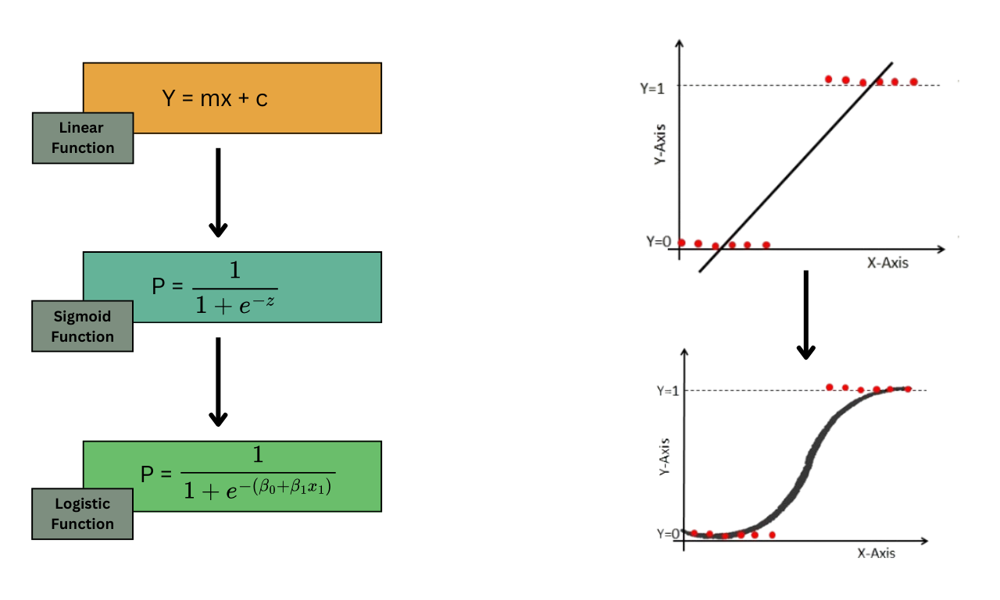

| customer | raw_score | probability | decision | |
|---|---|---|---|---|
| 0 | Customer A | -4.0 | 0.017986 | No Churn |
| 1 | Customer B | -1.5 | 0.182426 | No Churn |
| 2 | Customer C | 0.0 | 0.500000 | Churn |
| 3 | Customer D | 1.5 | 0.817574 | Churn |
| 4 | Customer E | 4.0 | 0.982014 | Churn |
Session 13: Logistic Regression
Classification
Logistic Regression
Session Goal
In this session, we develop a complete understanding of logistic regression, starting from intuition and building up to implementation.
The focus is not only on the model itself, but on how it is used in real-world decision-making.
The key idea is:
Logistic regression connects data → probability → decision
Think of it as a pipeline:
- We start with data about customers, users, or transactions
- The model converts that data into a probability
- That probability is then used to make a decision
For example:
- A customer has a
0.82probability of purchasing
- Do we contact them or not?
This is where analytics meets business.
Introduction
Regression vs Classification
Before introducing logistic regression, we must clearly distinguish between two types of problems.
As we already know the Regression is used when the output is a continuous number:
- predicting revenue
- estimating house prices
- forecasting demand
Example:
A customer is expected to spend $120 next month
Classification is used when the output is a category:
- purchase vs not purchase
- churn vs not churn
- approve vs reject
Example:
Will the customer purchase? →
YesorNo
This distinction is critical.
ImportantWhy Regression is Misleading
Logistic regression is called “regression”, but it is actually used for classification problems.
\[\downarrow\]
Because it predicts probabilities, not categories directly.
Real Business Problems
Marketing Campaign
You have 1,000 customers \(\rightarrow\) You want to send an offer \(\rightarrow\) Each contact costs money
Question/Problem:
Who should we contact?
Telecom Churn
- Customers may leave the service
- Retention campaigns are expensive
Question/Problem:
Which customers are at risk of churning?
Loan Approval
- Bank gives loans to customers
- Some customers default
Question/Problem:
Should we approve this loan?
Important
All these problems are not just predictions, as they are decisions with consequences.
Binary Target Variable
In all these examples, the outcome has only two possible values.
\[ y \in \{0, 1\} \]
We encode outcomes as:
- \(1\) → event happens (purchase, churn, default)
- \(0\) → event does not happen
Example dataset:
| Customer | Purchase |
|---|---|
| A | 1 |
| B | 0 |
| C | 1 |
This encoding is essential because it allows us to work mathematically with classification.
Why Not Linear Regression?
The Problem
At first glance, you might think:
Why not just use linear regression?
We can try:
\[ \hat{y} = \beta_0 + \beta_1x \]
But here is the issue:
Linear regression can produce any value:
\[ -\infty < \hat{y} < +\infty \]
Why This Breaks for Classification
Suppose we predict:
- \(-0.3\) → does this make sense as probability?
- \(1.4\) → can probability be greater than 1?
\(\downarrow\)
No!
Probabilities must always satisfy:
\[ 0 \leq p \leq 1 \]
Imagine a marketing model predicts:
- Customer A → 1.25 probability
- Customer B → -0.15 probability
\[\downarrow\]
These outputs are meaningless.
This is why linear regression is not suitable for classification.
The Need for Transformation
Thus, we need a function that:
- accepts any number from \(-\infty\) to \(+\infty\)
- always outputs a value between 0 and 1
This is exactly what the sigmoid function does.

From Probability to Decision
Predicting Probability
Logistic regression does not directly say:
“This customer will purchase”
Instead, it says:
\[ P(y = 1 \mid X) \]
Customer A → 0.82 probability of purchase
The probability gives us flexibility.
We can:
- rank customers
- prioritize actions
- control risk
Threshold-Based Decision
To make a final decision, we use a threshold.
\[ \hat{y} = \begin{cases} 1, & p \geq 0.5 \\ 0, & p < 0.5 \end{cases} \]
Example table
| Customer | Probability | Decision |
|---|---|---|
| A | 0.82 | 1 |
| B | 0.63 | 1 |
| C | 0.47 | 0 |
| D | 0.12 | 0 |
ImportantImportant to know
The threshold does not have to be 0.5.
- In marketing → lower threshold (more aggressive)
- In banking → higher threshold (more conservative)
Business translation:
- Probability → level of confidence
- Threshold → business strategy
This is where the model becomes actionable.
Logistic Regression Core Idea
Linear Score
Logistic regression starts similarly to linear regression.
We compute a score:
\[ z = \beta_0 + \beta_1x_1 + \cdots + \beta_kx_k \]
This is a weighted combination of features.
Example
Suppose:
\[ z = -2 + 0.6 \cdot \text{support calls} - 0.05 \cdot \text{tenure} \]
Interpretation (pay attention to signs):
- more support calls → increases score
- longer tenure → decreases score
Important
This score \(z\) is not yet a probability.
It is just a position on a scale:
- very negative → unlikely
- around zero → uncertain
- very positive → likely
Transition to Probability
To convert this score into a probability, we apply the sigmoid function:
\[ p = \frac{1}{1 + e^{-z}} \]
Intuition
Think of it like a decision system:
- raw score → internal evaluation
- sigmoid → converts into probability
- threshold → converts into decision
Mini Example
If:
\[ z = 0 \]
then:
\[ p = 0.5 \]
If:
\[ z = 2 \]
then:
\[ p \approx 0.88 \]
If:
\[ z = -2 \]
then:
\[ p \approx 0.12 \]
Important
Logistic regression works in three steps:
- Compute a score \(z\)
- Convert score into probability \(p\)
- Apply threshold to make decision
This completes the conceptual foundation before moving into implementation.
Storytelling Perspective
Imagine a telecom company evaluating customers for churn.
Each customer gets a score:
- many complaints → increases score
- long tenure → decreases score
- high monthly charges → increases score
So:
- Customer A → \(z = -3.2\) → very unlikely to churn
- Customer B → \(z = 0.4\) → uncertain
- Customer C → \(z = 2.1\) → very likely to churn
But these are just scores, not probabilities.
Intuition Through Examples
Let’s examine how different values of \(z\) behave.
import numpy as np
import pandas as pd
z_values = [-5, -2, -1, 0, 1, 2, 5]
p_values = 1 / (1 + np.exp(-np.array(z_values)))
df_sigmoid = pd.DataFrame({
"score_z": z_values,
"probability": p_values
})
df_sigmoid| score_z | probability | |
|---|---|---|
| 0 | -5 | 0.006693 |
| 1 | -2 | 0.119203 |
| 2 | -1 | 0.268941 |
| 3 | 0 | 0.500000 |
| 4 | 1 | 0.731059 |
| 5 | 2 | 0.880797 |
| 6 | 5 | 0.993307 |
Interpretation
| Score (\(z\)) | Probability |
|---|---|
| very negative | close to 0 |
| 0 | 0.5 |
| very positive | close to 1 |
Logistic regression is not linear in probability — it is linear in log-odds
Understanding Odds
From Probability to Odds
Instead of working directly with probability, logistic regression uses odds:
\[ \text{odds} = \frac{p}{1-p} \]
Example 1:
If:
\[ p = 0.75 \]
then:
\[ \text{odds} = \frac{0.75}{0.25} = 3 \]
Interpretation:
The event is 3 times more likely to happen than not happen
Example 2: Winning Game
Sayin that the odds in favor of my team (FC Barcelona) winning a game are 4 to 1 means:
- 4 of 5 times they win
- 1 of 5 times they lose.
Example 3: Lossing Game
Sayin that the odds in favor of my team (Real Madrid) winning a game are 1 to 4 means:
- 1 of 5 times they win
- 4 of 5 times they lose.
Odds Table
probabilities = [0.1, 0.3, 0.5, 0.7, 0.9]
odds_table = pd.DataFrame({
"probability": probabilities
})
odds_table["odds"] = odds_table["probability"] / (1 - odds_table["probability"])
odds_table| probability | odds | |
|---|---|---|
| 0 | 0.1 | 0.111111 |
| 1 | 0.3 | 0.428571 |
| 2 | 0.5 | 1.000000 |
| 3 | 0.7 | 2.333333 |
| 4 | 0.9 | 9.000000 |
Important
- probability increases linearly
- odds increase non-linearly
This makes odds more suitable for modeling.
From Odds to Log-Odds
Why Take the Log?
Odds are always positive:
\[ 0 < \text{odds} < \infty \]
But we want a model that can handle:
\[ -\infty < \text{value} < +\infty \]
So we take the logarithm:
\[ \log\left(\frac{p}{1-p}\right) \]
This is called the log-odds or logit.
Logistic Regression Equation
Now we connect everything: Logistic regression models the log-odds as a linear function of features:
\[ \log\left(\frac{p}{1-p}\right) = \beta_0 + \beta_1x_1 + \cdots + \beta_kx_k \]
This equation tells us:
Each feature changes the log-odds, not the probability directly
Interpreting Coefficients Properly
Direction of Effect
- \(\beta > 0\) → increases probability
- \(\beta < 0\) → decreases probability
Magnitude via Odds Ratio
To interpret magnitude, we use:
\[ e^{\beta} \]
sometimes called the odds ratio or
exp($\beta$).
Example
If:
\[ \beta = 0.7 \]
then:
\[ e^{0.7} \approx 2.01 \]
\[\downarrow\]
A one-unit increase in this feature doubles the odds of the event
Business Translation
Suppose:
feature= number of support calls
coefficient= 0.7
- \(e^{0.7} \approx 2\)
Then:
Each additional support call doubles the odds of churn
Bringing Everything Together
Logistic regression works as a pipeline:
Step 1 | Linear Score
\[ z = \beta_0 + \beta_1x_1 + \cdots \]
Step 2 | Convert to Probability
\[ p = \frac{1}{1 + e^{-z}} \]
Step 3 | Make Decision
\[ \hat{y} = \begin{cases} 1, & p \geq \text{threshold} \\ 0, & p < \text{threshold} \end{cases} \]
Test your understanding | Odds
Question 1 | Probability to Odds
A customer has a 60% probability of churn.
- What are the odds of churn?
- Interpret the result
Question 2 | Log-Odds to Probability
A model gives:
\[ \log(\text{odds}) = 2 \]
- Convert to odds
- Convert to probability
- Interpret the result
Question 1 | Solution
Recall:
\[ \text{odds} = \frac{p}{1-p} \]
\[ p = 0.6 \]
\[ \text{odds} = \frac{0.6}{0.4} = 1.5 \]
Interpretation:
- The event is 1.5 times more likely to happen than not happen
- Churn is more likely than staying, but not extremely strong
Question 2 | Solution
Recall:
\[ \text{odds} = e^{\text{log-odds}} \]
\[ \text{odds} = e^2 \approx 7.39 \]
Now convert to probability:
\[ p = \frac{7.39}{1 + 7.39} \approx 0.88 \]
Interpretation:
- The probability is approximately 88%
- This represents a very high likelihood of the event
ImportantFinal Intuition
- The model builds a score
- The sigmoid converts it into probability
- The threshold converts it into action
Logistic regression is not about predicting 0 or 1
It is about estimating how likely something is to happen
This is what makes it powerful for real-world decision systems.
TipVideo Explanation
Check out this video for a visual explanation of logistic regression:
Odd Ratios and Log-Odds Explained | Logistic Regression Intuition
Case Study 1: Customer Churn Prediction
In this section, we will use sythetic data to illustrate the entire logistic regression pipeline.
- train a logistic regression model
- interpret results using:
- coefficients and \(e^{\beta}\)
- confusion matrix
- revenue matrix
Download the Dataset
import pandas as pd
import numpy as np
import pandas as pd
from sklearn.model_selection import train_test_split
from sklearn.linear_model import LogisticRegression
from sklearn.metrics import confusion_matrix, accuracy_score, precision_score, recall_score, f1_score
df = pd.read_csv("https://raw.githubusercontent.com/hovhannisyan91/data_analytics_with_python/refs/heads/main/data/regression/logistic_regression/synthetic_churn_data.csv")
print(f"Dataset shape: {df.shape}")
df.head()
df.to_csv("../../lab/python/data/regression/logistic_regression/synthetic_churn_data.csv", index=False)Dataset shape: (1000, 6)Observing the Dataframe
Before modeling, we should always inspect the dataset.
df.info()<class 'pandas.DataFrame'>
RangeIndex: 1000 entries, 0 to 999
Data columns (total 6 columns):
# Column Non-Null Count Dtype
--- ------ -------------- -----
0 tenure 1000 non-null int64
1 monthly_charges 1000 non-null float64
2 support_calls 1000 non-null int64
3 contract_type 1000 non-null int64
4 churn 1000 non-null int64
5 education_level 1000 non-null str
dtypes: float64(1), int64(4), str(1)
memory usage: 53.8 KBThe dataset now contains both numeric and categorical variables.
| Column | Meaning |
|---|---|
tenure |
Number of months the customer has stayed with the company |
monthly_charges |
Monthly amount paid by the customer |
support_calls |
Number of support calls made by the customer |
contract_type |
Contract type, where 0 = prepaid and 1 = postpaid |
education_level |
Customer education category |
churn |
Target variable, where 1 = churn and 0 = no churn |
The target variable is:
\[ y = \text{churn} \]
where:
1: customer churned (left the service)
0: customer did not churn (stayed with the service)
Exploratory Data Analysis
Target Variable Distribution
df['churn'].value_counts(normalize=True)churn
0 0.633
1 0.367
Name: proportion, dtype: float64Churn Rate by Contract Type
churn_rate_by_contract = df.groupby('contract_type')['churn'].mean().reset_index()
import plotly.express as px
fig = px.bar(churn_rate_by_contract, x='contract_type', y='churn', title='Churn Rate by Contract Type')
fig.update_layout(
xaxis_title='Contract Type (0 = Prepaid, 1 = Postpaid',
yaxis_title='Churn Rate',
template='plotly_white'
)
fig.show()As it was expected, the churn rate is lower for postpaid customers (contract_type = 1) compared to prepaid customers (contract_type = 0).
Tip
Think about why this might be the case. What are the possible reasons for this difference in churn rates between prepaid and postpaid customers?
Churn Rate by Education Level
churn_rate_by_education = df.groupby('education_level')['churn'].mean().reset_index()
import plotly.express as px
fig = px.bar(churn_rate_by_education, x='education_level', y='churn', title='Churn Rate by Education Level')
fig.update_layout(
xaxis_title='Education Level',
yaxis_title='Churn Rate',
template='plotly_white'
)
fig.show()- The lowest observed churn rate is 12.40%.
- The highest observed churn rate is 63.60%.
Data Preprocessing
We now separate the dataset into input variables and the target variable.
X = df.drop(columns=["churn"])
y = df["churn"]X:contains all the features that we will use to predict churnycontains the target variable indicating whether a customer churned or not.
Encoding Categorical Variables
Logistic regression (basically all the ML models) requires numeric input.
The column education_level contains text categories, so we convert it into dummy variables.
Beofre encoding, the education_level column has 4 categories: and we will create 3 new binary columns to represent these categories (dropping one to avoid multicollinearity). As a base category, we will use education_level = "High School".
In ordert to make sure that the baseiline category is we will enforce the category using pd.Categorical before encoding.
education_order = ["High School", "Bachelor", "Master", "PhD"]
df["education_level"] = pd.Categorical(
df["education_level"],
categories=education_order,
ordered=True
)
education_dummies = pd.get_dummies(
df["education_level"],
prefix="education",
drop_first=True,
dtype=int
)
education_dummies.head()| education_Bachelor | education_Master | education_PhD | |
|---|---|---|---|
| 0 | 0 | 0 | 0 |
| 1 | 1 | 0 | 0 |
| 2 | 0 | 1 | 0 |
| 3 | 0 | 0 | 0 |
| 4 | 0 | 1 | 0 |
The remaining dummy variables compare each education level against that baseline.
For example, if the baseline is High School, then:
| Dummy Variable | Interpretation |
|---|---|
education_level_Bachelor |
Bachelor compared with High School |
education_level_Master |
Master compared with High School |
education_level_PhD |
PhD compared with High School |
Once we have the dummy variables, we can concatenate them back to the original dataframe and drop the original education_level column. Pay attention to the axis=1, which indicates that we are concatenating columns (not rows).
X_encoded = pd.concat([X.drop(columns=["education_level"]), education_dummies], axis=1)
X_encoded.head()| tenure | monthly_charges | support_calls | contract_type | education_Bachelor | education_Master | education_PhD | |
|---|---|---|---|---|---|---|---|
| 0 | 29 | 46.867736 | 6 | 0 | 0 | 0 | 0 |
| 1 | 15 | 74.163421 | 6 | 0 | 1 | 0 | 0 |
| 2 | 8 | 83.347822 | 3 | 1 | 0 | 1 | 0 |
| 3 | 21 | 45.788769 | 2 | 0 | 0 | 0 | 0 |
| 4 | 19 | 33.935607 | 7 | 0 | 0 | 1 | 0 |
Checking the final set of features
print("Final set of features:")
print(X_encoded.dtypes)Final set of features:
tenure int64
monthly_charges float64
support_calls int64
contract_type int64
education_Bachelor int64
education_Master int64
education_PhD int64
dtype: objectMaking sure that all the features are numeric is crucial for the logistic regression model to work properly. If there were any remaining categorical variables, we would need to encode them as well before proceeding with modeling.
Train-Test Split
Before training the model, we divide the data into two parts:
- Training set
- Test set
The training set is used to teach the model.
The test set is used to evaluate whether the model can make good predictions on new, unseen data
X_train, X_test, y_train, y_test = train_test_split(
X_encoded,
y,
test_size=0.2,
random_state=42,
stratify=y
)In machine learning, we should not evaluate the model on the same data that was used for training.
If we train and test the model on the same dataset, the model may appear to perform very well simply because it has already seen those examples. This does not tell us whether the model can generalize to new customers.
The train-test split helps us answer the following question:
Can the model make accurate predictions for customers it has not seen before?
For example, if we have 1,000 customers, using test_size=0.2 means:
| Dataset Part | Percentage | Number of Customers |
|---|---|---|
| Training set | 80% | 800 |
| Test set | 20% | 200 |
The model learns from the training set and is evaluated on the test set.
random_state=42
The train-test split is random by default.
This means that every time we run the code, Python may select different rows for the training and test sets.
As a result, the model results may slightly change every time we run the notebook.
By setting:
random_state=42we make the split reproducible.
This means that every time we run the code, we get the same training and testing sets.
The number 42 is not mathematically special. It is simply a commonly used fixed number.
stratify=y
The argument stratify=y is very important for classification problems.
It tells Python to preserve the same class distribution in both the training set and the test set.
For example, suppose the full dataset has the following churn distribution:
| Class | Meaning | Percentage |
|---|---|---|
| 0 | Did not churn | 80% |
| 1 | Churned | 20% |
With stratify=y, the training and test sets will keep approximately the same balance:
| Dataset Part | Did Not Churn | Churned |
|---|---|---|
| Training set | 80% | 20% |
| Test set | 80% | 20% |
This is especially important when the target variable is imbalanced.
In churn prediction, the number of customers who churn is usually much smaller than the number of customers who do not churn.
Without stratification, the test set may accidentally contain too few churned customers or too many churned customers.
That would make the model evaluation unreliable.
For example, if the test set contains very few churned customers, the model may look better than it really is.
Output of train_test_split()
The function returns four objects:
X_train, X_test, y_train, y_testEach one has a specific purpose.
X_train:contains the input features for the training data. This is the data the model uses to learn patterns.X_test:contains the input features for the test data. This allows us to test how well the model performs on unseen customers.y_train:contains the true target values for the training data. This is what the model tries to predict during training.y_test:contains the true target values for the test data. This is what we use to evaluate the model’s predictions on the test set.
Let’s check the shapes of these objects to confirm that the split was done correctly.
train_size = len(X_train)
test_size = len(X_test)
train_churn_rate = y_train.mean()
test_churn_rate = y_test.mean()
print("Training rows:", train_size)
print("Test rows:", test_size)
print("Training churn rate:", round(train_churn_rate, 3))
print("Test churn rate:", round(test_churn_rate, 3))Training rows: 800
Test rows: 200
Training churn rate: 0.368
Test churn rate: 0.365Thus , the train-test split is used to check whether the model can generalize.
The training set contains 800 customers.
The test set contains 200 customers.
The churn rate in the training set is np.float64(36.75)%, while the churn rate in the test set is np.float64(36.5)%.
Because we used stratification, these two percentages should be close.
Training the Logistic Regression Model
model = LogisticRegression(max_iter=1000)
model.fit(X_train, y_train)LogisticRegression(max_iter=1000)In a Jupyter environment, please rerun this cell to show the HTML representation or trust the notebook.
On GitHub, the HTML representation is unable to render, please try loading this page with nbviewer.org.
Parameters
max_iter=1000is used to ensure that the optimization algorithm has enough iterations to converge to a solution. Logistic regression uses an iterative process to find the best coefficients, and sometimes it may require more iterations than the default (which is usually 100) to find the optimal solution, especially if the dataset is complex or has many features.
The model estimates coefficients for each feature.
Internally, logistic regression models the log-odds of churn:
\[ \log\left(\frac{p}{1-p}\right) = \beta_0 + \beta_1x_1 + \cdots + \beta_kx_k \]
where \(p\) is the probability of churn.
Predicting Probabilities on the Test Set
probs = model.predict_proba(X_test)
probs[:5]array([[0.98318855, 0.01681145],
[0.58272749, 0.41727251],
[0.52510491, 0.47489509],
[0.3840094 , 0.6159906 ],
[0.67936502, 0.32063498]])The output probs contains the predicted probability of churn for each customer in the test set.
We use [:, 1] because class 1 represents churn.
probs = probs[:, 1]
probs[:5]array([0.01681145, 0.41727251, 0.47489509, 0.6159906 , 0.32063498])Converting the Probabilities into Binary Predictions
threshold = 0.5
preds = (probs >= threshold).astype(int)
preds[:5]array([0, 0, 0, 1, 0])The threshold converts probabilities into class predictions.
\[ \hat{y} = \begin{cases} 1, & p \geq 0.5 \\ 0, & p < 0.5 \end{cases} \]
Previewing the Predictions
prediction_results = X_test.copy()
prediction_results["actual_churn"] = y_test.values
prediction_results["predicted_probability"] = probs
prediction_results["predicted_churn"] = preds
prediction_results.head()| tenure | monthly_charges | support_calls | contract_type | education_Bachelor | education_Master | education_PhD | actual_churn | predicted_probability | predicted_churn | |
|---|---|---|---|---|---|---|---|---|---|---|
| 361 | 34 | 55.062693 | 2 | 1 | 0 | 0 | 0 | 0 | 0.016811 | 0 |
| 5 | 23 | 103.493024 | 4 | 0 | 0 | 0 | 1 | 0 | 0.417273 | 0 |
| 692 | 25 | 75.778342 | 5 | 0 | 0 | 1 | 0 | 1 | 0.474895 | 0 |
| 708 | 6 | 112.717782 | 5 | 1 | 0 | 1 | 0 | 0 | 0.615991 | 1 |
| 841 | 26 | 67.601813 | 7 | 1 | 0 | 0 | 1 | 0 | 0.320635 | 0 |
Coefficient Interpretation with Exponentiated Betas
The raw coefficients are log-odds coefficients.
To make them easier to interpret, we exponentiate them.
coef_df = pd.DataFrame({
"feature": X_encoded.columns,
"beta": model.coef_[0],
"exp_beta": np.exp(model.coef_[0])
})
coef_df = coef_df.sort_values("exp_beta", ascending=False)
coef_df| feature | beta | exp_beta | |
|---|---|---|---|
| 2 | support_calls | 0.569350 | 1.767118 |
| 4 | education_Bachelor | 0.122790 | 1.130646 |
| 5 | education_Master | 0.112264 | 1.118808 |
| 1 | monthly_charges | 0.020344 | 1.020552 |
| 0 | tenure | -0.055288 | 0.946213 |
| 6 | education_PhD | -0.226263 | 0.797508 |
| 3 | contract_type | -1.228894 | 0.292616 |
Interpretation
The table contains two important values:
| Column | Meaning |
|---|---|
beta |
Effect on log-odds |
exp_beta |
Odds multiplier, calculated as \(e^{\beta}\) |
Rules for interpretation:
- If
exp_beta > 1, the feature increases the odds of churn
- If
exp_beta < 1, the feature decreases the odds of churn
- If
exp_beta = 1, the feature has almost no effect on churn odds
Support Calls
exp_beta = 1.77- Each additional support call multiplies churn odds by 1.77
- This means churn odds increase by approximately 77%
- This is the strongest churn-increasing factor
Business meaning: frequent support calls are an early warning signal
Education: Bachelor
exp_beta = 1.13- Bachelor customers have 1.13 times the odds of churn compared with the baseline education group
- This means approximately 13% higher odds of churn
The effect is positive but relatively small
Education: Master
exp_beta = 1.12- Master customers have 1.12 times the odds of churn compared with the baseline education group
- This means approximately 12% higher odds of churn
The effect is also positive but relatively small
Education: PhD
exp_beta = 0.80- PhD customers have 0.80 times the odds of churn compared with the baseline education group
- This means approximately 20% lower odds of churn
- This result goes against the original assumption that higher education should always increase churn risk
Possible reason: other variables may explain churn better, or the synthetic relationship may not be strong enough
Monthly Charges
exp_beta = 1.02- Each one-unit increase in monthly charges multiplies churn odds by 1.02
- This means approximately 2% higher odds of churn per unit
- The single-unit effect is small, but larger price differences can matter
Example:
\[ 1.02^{10} \approx 1.22 \]
A 10-unit increase in monthly charges is associated with roughly 22% higher odds of churn.
Tenure
exp_beta = 0.95- Each additional month of tenure multiplies churn odds by 0.95
- This means churn odds decrease by approximately 5% per month
Business meaning: longer-tenure customers are more stable
Contract Type
exp_beta = 0.29- Postpaid contract customers have 0.29 times the odds of churn compared with prepaid customers
- This means approximately 71% lower odds of churn
- This is the strongest churn-reducing factor
Business meaning: long-term contracts strongly reduce churn risk
Retention Strategy
The company should prioritize customers who:
- have many support calls
- pay higher monthly charges
- have short tenure
- are on postpaid contracts
These customers are more likely to churn and are good candidates for retention campaigns.
Confusion Matrix
One of the most common ways to evaluate classification models is through the confusion matrix.
The confusion matrix compares actual churn outcomes with predicted churn outcomes.
| Outcome | Meaning |
|---|---|
| True Positive | Customer churned and model predicted churn |
| False Positive | Customer did not churn but model predicted churn |
| False Negative | Customer churned but model missed it |
| True Negative | Customer did not churn and model predicted no churn |
cm = confusion_matrix(y_test, preds)
tn, fp, fn, tp = cm.ravel()
cmarray([[103, 24],
[ 23, 50]])Classification Metrics
accuracy = accuracy_score(y_test, preds)
precision = precision_score(y_test, preds)
recall = recall_score(y_test, preds)
print("Accuracy:", round(accuracy, 3))
print("Precision:", round(precision, 3))
print("Recall:", round(recall, 3))Accuracy: 0.765
Precision: 0.676
Recall: 0.685
TipAccuracy
The model accuracy is 76.5%.
TipPrecision
The precision is 67.57%.
This means that among customers predicted as churners, 67.57% actually churned.
TipRecall
The recall is 68.49%.
This means that among all actual churners, the model identified 68.49%.
Revenue Matrix
There is a cost associated with contacting customers and a cost associated with losing customers. Usally from Data Analytics perspective, we want to maximize revenue, not just accuracy. Revenue matrix allows us to evaluate the model based on the financial impact of its predictions.
Assume the company contacts customers predicted as likely to churn.
retention_cost = 10
retention_benefit = 50
revenue_from_saved_customers = tp * (retention_benefit - retention_cost)
cost_from_unnecessary_contacts = fp * retention_cost
net_profit = revenue_from_saved_customers - cost_from_unnecessary_contacts
print("Revenue from saved customers:", revenue_from_saved_customers)
print("Cost from unnecessary contacts:", cost_from_unnecessary_contacts)
print("Net profit:", net_profit)Revenue from saved customers: 2000
Cost from unnecessary contacts: 240
Net profit: 1760| Prediction Outcome | Business Meaning | Financial Effect |
|---|---|---|
| True Positive | Correctly targeted churner | retention_benefit - retention_cost |
| False Positive | Contacted non-churner unnecessarily | -retention_cost |
| False Negative | Missed churner | 0 |
| True Negative | Correctly ignored non-churner | 0 |
The model correctly targeted np.int64(50) churners.
These customers generated np.int64(2000) units of value after subtracting campaign cost.
The model also contacted np.int64(24) customers unnecessarily, creating a cost of np.int64(240).
The final estimated campaign profit is np.int64(1760).
Homework: Customer Churn Prediction
Use the same steps to build a logistic regression model on the
customer_churn_data.csvdataset.
df = pd.read_csv("https://raw.githubusercontent.com/hovhannisyan91/data_analytics_with_python/refs/heads/main/data/regression/logistic_regression/Telco_Customer_Churn.csv")
df.head()| customerID | gender | SeniorCitizen | Partner | Dependents | tenure | PhoneService | MultipleLines | InternetService | OnlineSecurity | ... | DeviceProtection | TechSupport | StreamingTV | StreamingMovies | Contract | PaperlessBilling | PaymentMethod | MonthlyCharges | TotalCharges | Churn | |
|---|---|---|---|---|---|---|---|---|---|---|---|---|---|---|---|---|---|---|---|---|---|
| 0 | 7590-VHVEG | Female | 0 | Yes | No | 1 | No | No phone service | DSL | No | ... | No | No | No | No | Month-to-month | Yes | Electronic check | 29.85 | 29.85 | No |
| 1 | 5575-GNVDE | Male | 0 | No | No | 34 | Yes | No | DSL | Yes | ... | Yes | No | No | No | One year | No | Mailed check | 56.95 | 1889.5 | No |
| 2 | 3668-QPYBK | Male | 0 | No | No | 2 | Yes | No | DSL | Yes | ... | No | No | No | No | Month-to-month | Yes | Mailed check | 53.85 | 108.15 | Yes |
| 3 | 7795-CFOCW | Male | 0 | No | No | 45 | No | No phone service | DSL | Yes | ... | Yes | Yes | No | No | One year | No | Bank transfer (automatic) | 42.30 | 1840.75 | No |
| 4 | 9237-HQITU | Female | 0 | No | No | 2 | Yes | No | Fiber optic | No | ... | No | No | No | No | Month-to-month | Yes | Electronic check | 70.70 | 151.65 | Yes |
5 rows × 21 columns
We have customer information for a Telecommunications company:
We’ve got customer IDs, general customer info, the servies they’ve subscribed too, type of contract and monthly charges. This is a historic customer information so we have a field stating whether that customer has churned
Field Descriptions:
customerID- Customer IDgender- Whether the customer is a male or a femaleSeniorCitizen- Whether the customer is a senior citizen or not (1, 0)Partner- Whether the customer has a partner or not (Yes, No)Dependents- Whether the customer has dependents or not (Yes, No)tenure- Number of months the customer has stayed with the companyPhoneService- Whether the customer has a phone service or not (Yes, No)MultipleLines- Whether the customer has multiple lines or not (Yes, No, No phone service)InternetService- Customer’s internet service provider (DSL, Fiber optic, No)OnlineSecurity- Whether the customer has online security or not (Yes, No, No internet service)OnlineBackup- Whether the customer has online backup or not (Yes, No, No internet service)DeviceProtection- Whether the customer has device protection or not (Yes, No, No internet service)TechSupport- Whether the customer has tech support or not (Yes, No, No internet service)StreamingTV- Whether the customer has streaming TV or not (Yes, No, No internet service)StreamingMovies- Whether the customer has streaming movies or not (Yes, No, No internet service)Contract- The contract term of the customer (Month-to-month, One year, Two year)PaperlessBilling- Whether the customer has paperless billing or not (Yes, No)PaymentMethod- The customer’s payment method (Electronic check, Mailed check Bank transfer (automatic), Credit card (automatic))MonthlyCharges- The amount charged to the customer monthlyTotalCharges- The total amount charged to the customerChurn- Whether the customer churned or not (Yes or No)